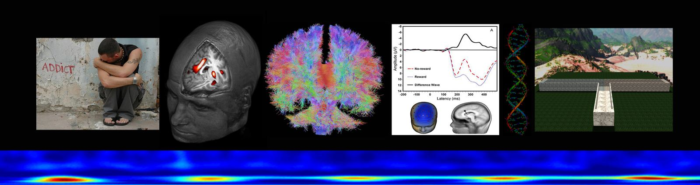
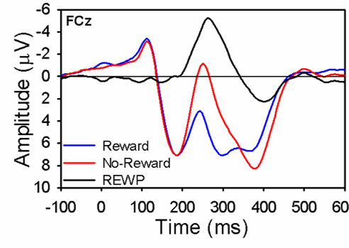
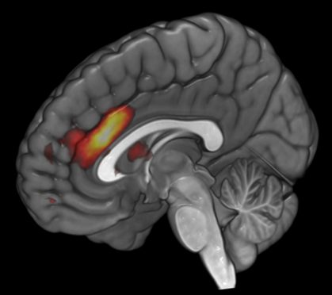
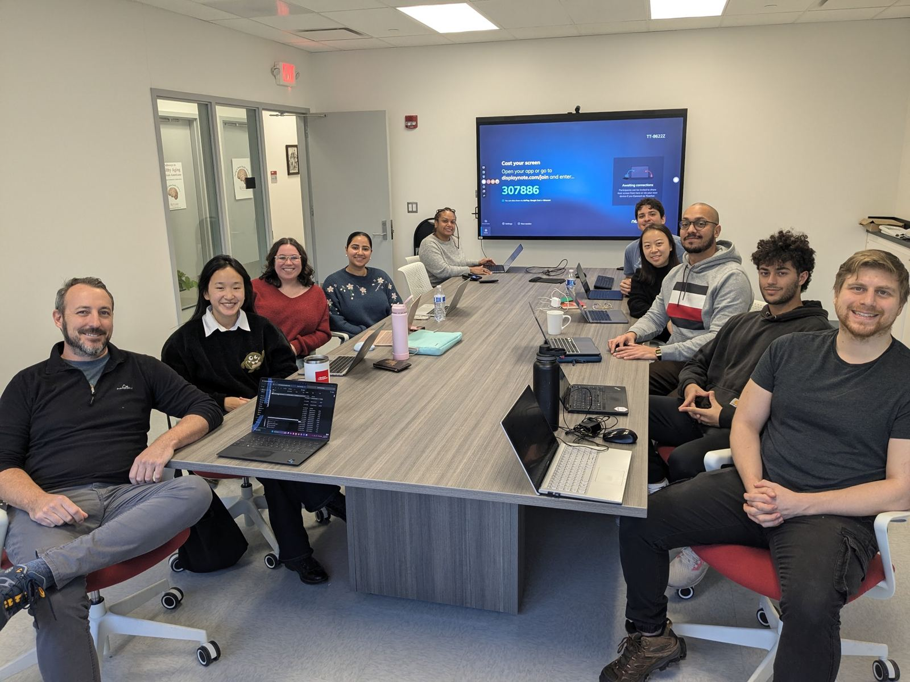
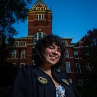
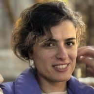
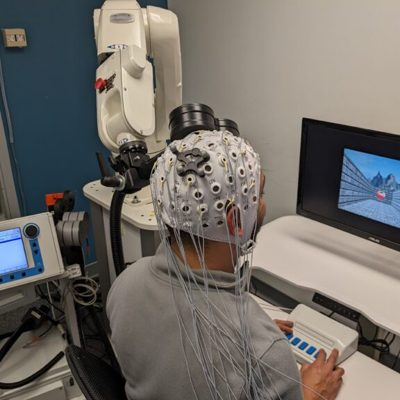

Baker Lab · Principal Investigator Travis E. Baker, PhD · Rutgers University–Newark
Laboratory for Cognitive Neuroimaging and Stimulation
At LCNS, we combine advanced multimodal neuroimaging and non-invasive brain stimulation techniques to uncover how the brain supports reinforcement learning, decision-making, cognitive control, and spatial navigation. Our research focuses on understanding how specific brain regions, including the anterior midcingulate cortex, midbrain dopamine system, basal ganglia, and parahippocampal cortex, contribute to these psychological processes in both typical and clinical populations.
Advance scientific understanding of the neural and cognitive mechanisms that underlie goal-directed navigation.
Refine neuroimaging methods and experimental designs to better characterize brain function across diverse populations, including individuals with substance use disorders.
Develop innovative brain stimulation interventions to improve psychiatric care and cognitive health.
Research

Research
We study how the brain learns from reward and finds its way through the world, and how these systems break down in addiction and other disorders. To do this we combine EEG, MEG and fMRI with robot-assisted and closed-loop TMS, virtual and augmented reality, and computational models of learning. Our long-term goal is to turn what we learn about these circuits into new brain-based treatments.
reward positivity · reinforcement learning


How the brain learns from reward
When an outcome is better than expected, dopamine signals a reward prediction error, and the anterior midcingulate cortex (MCC) uses it to learn which actions are worth pursuing. We track this signal at the scalp with the reward positivity, an EEG response that peaks about a quarter of a second after feedback. Combining it with reinforcement learning models, we ask how each person learns from wins and losses and how this shapes effort, choice and goal pursuit.
We also study how this learning signal is disrupted across clinical populations, including addiction, depression and early life adversity, with the aim of identifying where reward processing goes wrong and how it might be restored.
In addiction, drug rewards come to outweigh everyday rewards like money, food and social connection. Our clinical program asks whether stimulating the prefrontal cortex can rebalance the MCC's response to reward, so people are better able to pursue and maintain recovery goals.
Along the way, we are developing new tools for precision psychiatry: brain-based measures that identify who is most likely to benefit from stimulation, and individualized, image-guided targeting that tailors treatment to each person's brain.
In animals, theta rhythms in the parahippocampal cortex reset when something important happens, such as finding food, and this helps store where it happened. We study the human version of this signal: right-posterior theta, a 4–8 Hz burst over the right side of the scalp when people find rewards in virtual mazes.
We also use TMS to probe this system directly, with the goal of learning how stimulation can restore memory in clinical populations such as mild cognitive impairment, dementia and Alzheimer's disease.
We usually study decision-making the way we study rats in a Skinner box: people press buttons to choose between options that pay out with some probability. Because button presses say so little, many different models fit them equally well, and it is unclear whether such simple tasks engage the same brain processes people use in everyday life.
To move beyond this, we combine three tools. Augmented reality places tasks into the real environment, so people move, turn and use spatial context as they would outside the lab. Mobile EEG records brain activity while they do. And because people, unlike rats, can talk, we ask them to think out loud as they decide, then use large language models to analyze what they say. Together these reveal the strategies people use and how individuals differ, which helps us build better models of how the brain makes decisions.
A robot holds the coil on an MRI-defined target with millimeter precision, follows head movement, and returns to the same spot across sessions.
Closed-loop EEG-TMS
Our system reads EEG in real time and fires a TMS pulse at a chosen phase of an ongoing rhythm. During navigation it hits the targeted theta phase more reliably than standard phase-prediction methods.
Virtual and augmented reality with EEG
VR and AR headsets combined with mobile EEG let us link brain signals to every movement a person makes in a realistic environment.
Multimodal imaging and modeling
Simultaneous EEG-fMRI, MEG and reinforcement learning models let us connect scalp signals to their sources in the brain and to how each person learns.
People
The team

Travis E. Baker, PhD
Principal Investigator · Associate Professor, Center for Molecular and Behavioral Neuroscience
The three pillars of my research program are as follows: 1) advance our scientific knowledge of the neurocognitive mechanisms that underlie goal-directed behavior, 2) create novel neuroimaging paradigms to better characterize these functions in the brain, and 3) devise the next generation of brain-based interventions for mental disorders. From basic to clinical investigations, my research has largely focused on the reward and control function associated with the anterior midcingulate cortex, the decision-making function associated with the mesocorticolimbic dopamine system, and the navigation function associated with the parahippocampal cortex. This work involves a new fusion of techniques, including virtual and augmented reality paradigms, computational modeling, genetics, human electrophysiology (ERPs, time-frequency), structural and functional neuroimaging, and robotic transcranial magnetic stimulation (Robotic-TMS). It is my long-term goal to identify new neurocognitive targets for treatment development (e.g. substance use disorders, childhood trauma, depression, chemotherapy-induced cognitive impairment, Parkinson’s disease, Alzheimer’s disease).
Leads the lab's NIDA-funded UG3/UH3 trial on restoring reward function in nicotine use disorder. Also studies attention, alpha oscillations and reward in people who use substances. Mobile-EEG, TMS, diffusion weighted imaging
Jaleesa Stringfellow-James, PhD
Measuring and modulating reward functioning in addiction with TMS. Augmented and virtual reality, EEG, fMRI, EEG-fMRI, machine learning
PhD students
Yifan Gao
Understanding the relationship between reward prediction error signals and the reward positivity. Closed-loop EEG-TMS, EEG, computational modeling
Merna Zaki
Opioid use disorder, reward processing. EEG, TMS

Mallory Jones
Substance use disorders, rumination, cognitive control. EEG

Anis Hasani
Reward processing. Closed-loop TMS, EEG
Shuwen Li
Rotating graduate student. Translating decision-making research between animals and humans.
Research staff & students
BT
Benjamin Troutman
Laboratory/Technical Assistant. Supports the UG3/UH3 nicotine study.
Soncia Hughes
Undergraduate researcher. Development of the reward positivity.

Mr. Roboto
I am interested in precision targeting for brain stimulation.
Malte R. Güth, PhD · PhD May 2024. Dissertation: Multimodal imaging and closed-loop brain stimulation of human theta oscillations during spatial navigation. Now a postdoctoral fellow in the Opitz Lab, University of Minnesota
Galit Karpov, PhD · PhD August 2024. Dissertation: Effects of childhood maltreatment on adult threat processing. Now a postdoctoral fellow at the Medical College of Wisconsin
Full list, including conference abstracts, on Google Scholar.
News
Lab news
Galit Karpov's paper in Cognitive, Affective, & Behavioral Neuroscience identifies threat-related gamma activity as a mechanism linking childhood maltreatment and adult anxiety.
Malte Güth's new paper in the International Journal of Psychophysiology shows that right posterior theta during encoding predicts how well people remember locations in virtual navigation.
Yifan Gao's paper in Psychophysiology shows the reward positivity moves from feedback to predictive cues as people learn, as temporal difference learning predicts.
New in Translational Psychiatry: prefrontal TMS normalizes the blunted midcingulate reward response in people who use opioids.
Malte Güth's EEG-MEG and simultaneous EEG-fMRI work linking right posterior theta to the parahippocampal gyrus is out in Imaging Neuroscience.
Congratulations to Dr. Malte Güth (May) and Dr. Galit Karpov (August) on completing their PhDs.
Busch Biomedical Grant to target memory circuits with noninvasive brain stimulation for Alzheimer's disease.
$2.5 million NIH grant to develop brain-based interventions for substance use disorders.
Lab life
Lab life
Conferences, awards, holiday parties and the occasional hockey game. A few moments from the lab since it opened in 2016.
Conferences
34th Annual CMBN Symposium, Rutgers–Newark
Congratulations to Mallory Jones on a great talk. Thanks also to Merna Zaki, Soncia Hughes, Jaleesa Stringfellow, Shuwen Li and Anis Hasani for representing the Baker Lab with excellent posters.
Posters and dinner with friends at the Society for Psychophysiological Research meeting in Vancouver.
View photos (2)
BHI Symposium, Piscataway
Masked and distanced, Malte receives the best poster award at the 7th Annual Rutgers Brain Health Institute Symposium.
View photos (1)
SPR, Washington DC
The lab brings seven posters and talks to the 59th Annual Meeting of the Society for Psychophysiological Research.
Lab socials
Newark outings
Christmas
Halloween
Backyard BBQ
Celebrations
Participate
Take part in our research
If you are interested in participating in our research, or have questions about our research or research positions available, please get in touch. We look forward to hearing from you!
Modulating neural mechanisms of reward processing in tobacco users
We are looking for adults who smoke and want to cut down or quit, for a study of how the brain processes reward in tobacco users.
What's involved
One MRI brain scan at the Rutgers Brain Imaging Center (lying still in a narrow tube for up to 60 minutes)
Brain activity recordings (EEG) while you complete computerized tasks
15 sessions of transcranial magnetic stimulation (TMS), a safe, non-invasive brain stimulation technique, Monday to Friday over 3 weeks
Brief questionnaires at each visit
Follow-up phone calls at 1 week and 1 month
You may be eligible if you
Are 18 to 60 years old
Smoke 10 or more cigarettes per day
Are motivated to reduce or quit smoking
Can come in daily over 3 consecutive weeks
Have no history of seizures or metal implants
Time
20 sessions of 1–2 hours over 1–2 months (about 25–35 hours in total)
Compensation
$25/hour plus bonuses, $850–$1,000 in total
Location
Center for Molecular and Behavioral Neuroscience, Rutgers–Newark
To learn more or check whether you're eligible, contact our study team: 973-353-0893 · cognitivestudy@newark.rutgers.edu
Contact
Find us
Emailtravis.e.baker@rutgers.edu
AddressCenter for Molecular and Behavioral Neuroscience 197 University Avenue, Room 307D Newark, NJ 07102 Open in Maps
Join the labProspective PhD students apply through the Behavioral and Neural Sciences program. Postdocs and research assistants, email Travis directly.
Funded by
National Institute on Drug AbuseNational Cancer InstituteResearch Corporation · ScialogRutgers Busch Biomedical Grant ProgramNeurotechnology Innovation Center (NTICe)